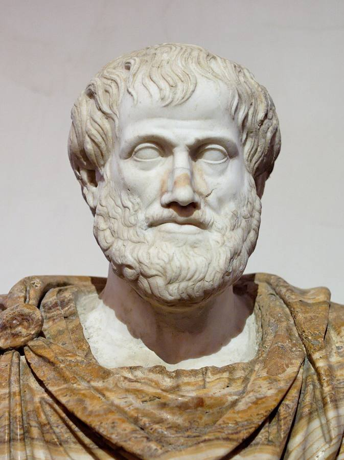

Ética y derecho
Qué es justo y por qué. Los grandes debates, con los argumentos de cada postura.


La ética es la reflexión sobre lo que está bien y lo que está mal, y sobre por qué. Se pregunta si una ley es justa, no solo si es válida. En esta sección presentamos los grandes debates con los argumentos de cada postura, sin dar la respuesta hecha.
La pena de muerte en España
Del garrote vil a su abolición total en 1995.
Leer la fichaDebate · SaludLa eutanasia
¿Tenemos derecho a decidir cómo morir? La ley de 2021 y los argumentos de cada lado.
Leer la fichaDebate · TecnologíaÉtica de la inteligencia artificial
Qué decisiones no deberían tomar las máquinas, según la ley europea.
Leer la fichaGran pregunta
¿Lo legal es siempre justo?
De Antígona a Rosa Parks, la historia está llena de personas que desobedecieron leyes que consideraban injustas. Hay quien defiende que la ley debe cumplirse siempre, porque sin ella no hay convivencia, y quien sostiene que una ley injusta no obliga en conciencia.
Momentos de la historia de la ética
- s. IV a. C.
Aristóteles distingue la justicia de la ley: la ley puede equivocarse. - s. XVI
La Escuela de Salamanca defiende que los indígenas de América tienen derechos naturales. - 1764
Cesare Beccaria publica Dei delitti e delle pene contra la tortura y la pena de muerte. - 1785
Kant: las personas son un fin en sí mismas, nunca solo un medio. - 1948
Declaración Universal de Derechos Humanos. - 1979
Informe Belmont: principios éticos para la investigación con personas.
Más debates
El aborto: la ley y el debate
Qué dice la ley española sobre la interrupción voluntaria del embarazo y cuáles son los argumentos de cada postura.
Leer la fichaDebate · DerechosLibertad de expresión: hasta dónde llega
Humor, críticas, insultos, discurso de odio y redes sociales: dónde pone la ley los límites y por qué se discute.
Leer la fichaDebate · AnimalesLos animales y la ley
De cosas a «seres sintientes»: cómo ha cambiado la protección de los animales y qué se sigue discutiendo.
Leer la fichaDebate · FamiliaGestación subrogada
Por qué en España no es válido el contrato de «vientre de alquiler», qué pasa con los bebés nacidos en el extranjero y qué argumentos se cruzan.
Leer la ficha